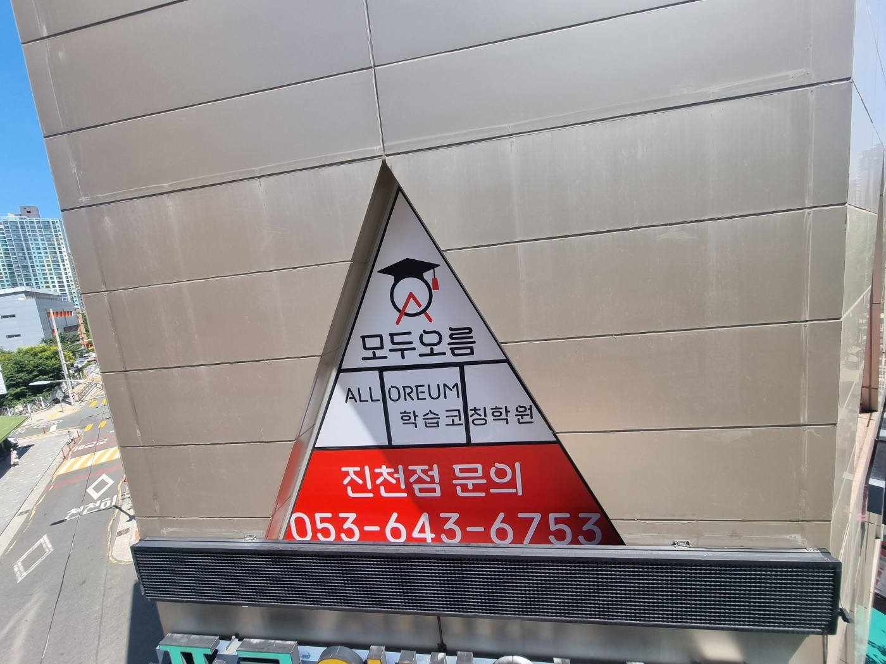
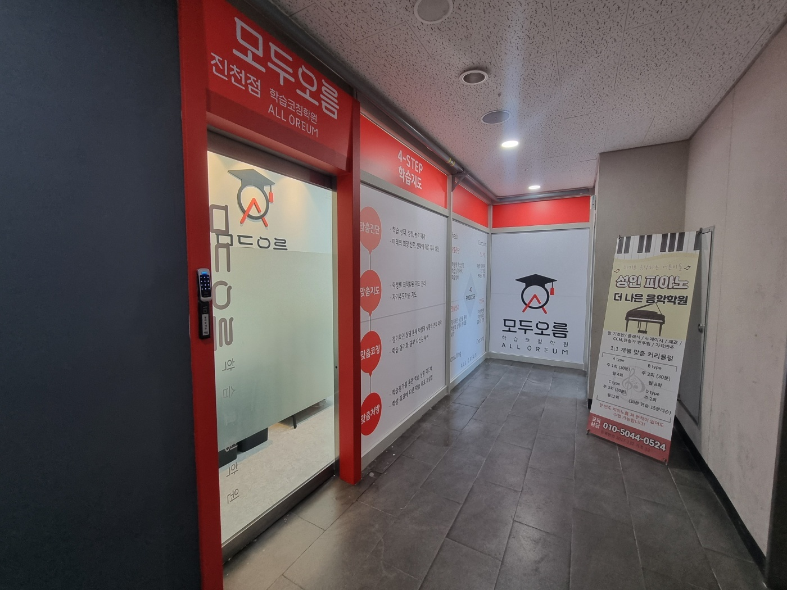
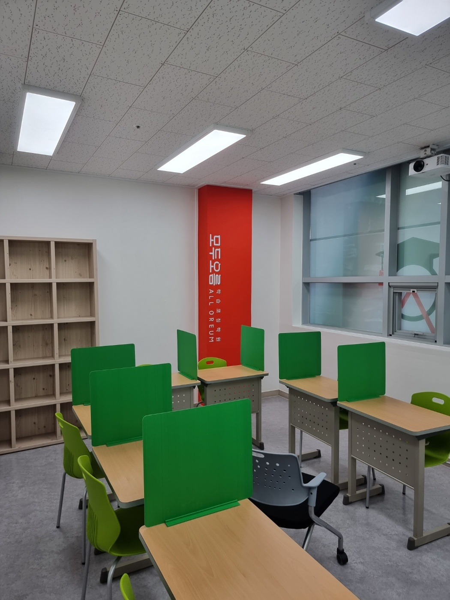
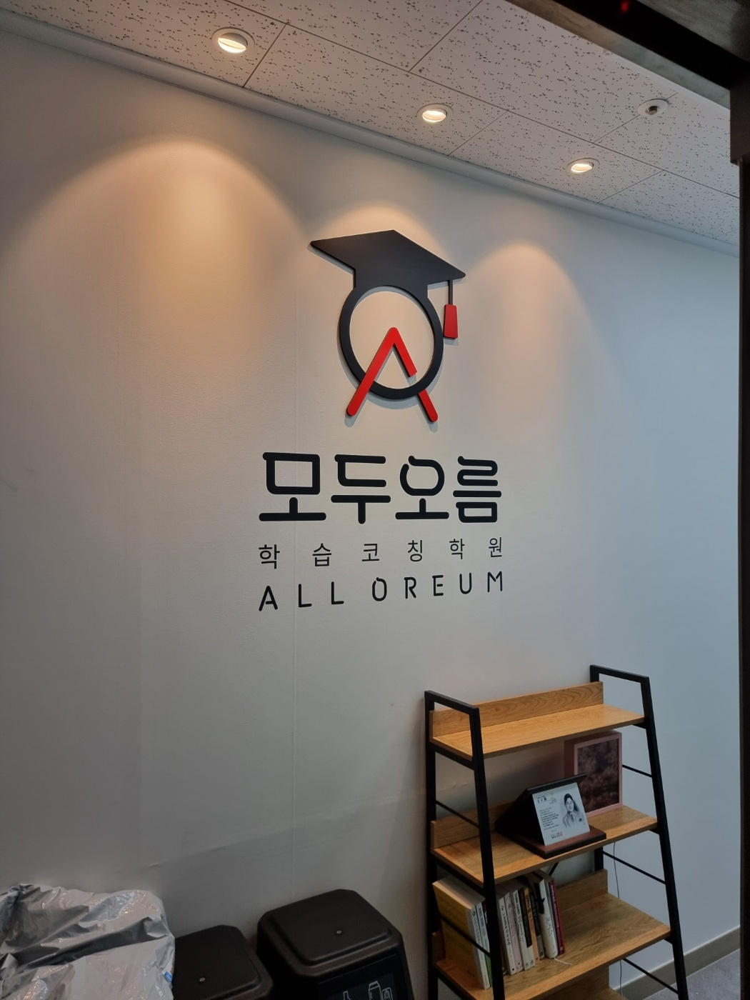

안녕하세요, 대구 달서구 유천동의 와와학습코칭 진천점입니다. 조암남로를 따라 걷다 보면 건물 외벽에 삼각형 간판이 하나 붙어 있습니다. 모두오름 학습코칭학원 진천점, 와와 학습코칭센터가 함께 운영하는 브랜드입니다. 아파트 단지와 상가가 맞붙은 동네라 아이들이 학교를 마치고 걸어서 오갈 수 있는 거리에 있습니다.
이 동네에서 학원을 찾는 부모님들께 자주 듣는 이야기가 있습니다. "상담을 받긴 받았는데, 결국 성적표 보면서 몇 등급인지 확인하고 끝났어요." 상담이 그 자리에서 끝나면 아이의 공부는 다음 주에도 똑같습니다. 진천점이 벽에 네 단계를 큼직하게 붙여 놓은 이유가 여기에 있습니다.

문을 열기 전에 먼저 보이는 것 — 4-STEP 학습지도
진천점 출입문 옆 벽에는 4-STEP 학습지도가 붙어 있습니다. 상담을 오신 부모님이 자리에 앉기도 전에 읽게 되는 자리입니다. 네 단계는 이렇게 이어집니다.
- ① 맞춤진단 — 아이의 현재 학습 상태와 성향을 먼저 확인합니다. 어느 과목이 몇 점인지보다, 왜 그 점수가 나왔는지를 봅니다. 그리고 아이가 가고 싶어 하는 방향에 맞춰 목표를 함께 정합니다.
- ② 맞춤지도 — 진단에서 드러난 취약한 과목과 단원을 중심으로 지도합니다. 모든 아이에게 같은 교재를 같은 속도로 돌리지 않습니다.
- ③ 맞춤코칭 — 정기적인 상담으로 학습 성향과 성적 변화를 계속 따라갑니다. 이 단계의 목적은 잔소리가 아니라 학습 동기와 공부 자신감입니다.
- ④ 맞춤처방 — 아이가 실제로 쓴 학습 결과물을 놓고 성취를 확인합니다. 부족한 영역이 나오면 그에 맞는 다음 학습을 처방합니다.
중요한 건 이 네 단계가 일직선이 아니라 원이라는 점입니다. 처방까지 갔으면 다시 진단으로 돌아옵니다. 3월에 한 번 진단하고 12월에 결과를 보는 방식이 아니라, 단원이 바뀌고 시험이 끝날 때마다 이 원을 한 바퀴 돕니다. 그래서 진천점의 상담은 "이번 시험 몇 점이었네요"로 시작해서 "그래서 다음 3주 동안 무엇을 할 것인지"로 끝납니다.

가림판이 있는 자리, 없는 자리
교실 책상마다 초록색 가림판이 세워져 있습니다. 옆자리가 몇 페이지를 푸는지 보이지 않게 하려는 것입니다. 중·고등학생에게 이 가림판은 두 가지 일을 합니다. 하나는 비교를 줄이는 것입니다. 진도가 빠른 친구가 눈에 들어오면 아이는 이해하지 않고 넘기려 합니다. 다른 하나는 혼자 버티는 시간을 만드는 것입니다. 시험장에서는 아무도 도와주지 않으니까요.
다만 가림판을 세워 놓기만 하면 그건 그냥 독서실입니다. 진천점은 혼자 푸는 시간과 물어보는 시간을 나눠서 운영합니다. 정해진 시간 동안은 막혀도 스스로 붙들고, 그 시간이 끝나면 선생님을 붙잡고 물어봅니다. 아이가 "모르겠는데요"라고 말하기까지 5분을 버텨 본 것과, 1분 만에 손을 든 것은 남는 게 다릅니다.
월서중·조암중에서 영남고·상원고로 넘어가는 길목
진천점에 오는 아이들은 한솔초·한샘초·신월초·용천초를 거쳐 월서중·조암중·월암중으로, 그리고 영남고·상원고·대진고·효성여고로 이어집니다. 한 동네 안에서 초등부터 고등까지 연결되는 구조라, 진천점은 아이를 몇 년에 걸쳐 보게 되는 경우가 많습니다.
그래서 이 지점이 특히 신경 쓰는 시기가 두 군데 있습니다. 첫째는 중3 2학기입니다. 고입을 앞두고 마음이 붕 뜨는 시기인데, 여기서 손을 놓으면 고1 첫 중간고사에서 그대로 드러납니다. 둘째는 고1 1학기입니다. 중학교 때 90점을 받던 아이가 고등학교에서 처음 등급을 받아 들고 흔들리는 시기입니다. 이때 필요한 건 새 문제집이 아니라, "지금 무엇이 부족한지"를 정확히 짚어 주는 진단과 처방입니다. 4-STEP이 실제로 힘을 발휘하는 자리가 여기입니다.

상담은 부모님과 아이가 같은 그림을 보는 자리
진천점 상담 공간은 크지 않습니다. 로고가 붙은 벽과 책 선반, 그리고 마주 앉을 자리가 전부입니다. 다만 이 자리에서 하는 이야기는 정해져 있습니다. 아이가 지금 어디에 있고, 어디로 가려 하고, 그 사이에 무엇이 비어 있는지.
부모님께 드리고 싶은 말씀이 하나 있습니다. 아이의 성적이 오르지 않을 때 원인은 대개 공부 시간이 아니라 공부 방법에 있습니다. 하루 네 시간을 앉아 있어도 이해하지 못한 채 문제만 넘기면 다섯 시간으로 늘려도 같습니다. 진천점이 진단을 먼저 하는 이유가 그것입니다. 무엇을 더 시킬지 정하기 전에, 지금 무엇이 새고 있는지부터 찾습니다.
진천점을 찾아오시는 길
와와학습코칭 진천점은 대구광역시 달서구 조암남로 158, 301호(유천동)에 있습니다. 학습 진단과 상담은 무료로 진행되며, 아이와 함께 오셔도 좋고 부모님만 먼저 오셔서 이야기를 나누셔도 좋습니다. 초등 고학년부터 고등까지, 내신 관리와 자기주도학습 습관을 함께 잡아 드립니다.
"우리 아이가 공부를 안 하는 건지, 못 하는 건지 모르겠다"는 말씀을 자주 듣습니다. 그 답을 찾는 데서부터 시작하는 것이 진천점의 방식입니다.